Test fmincon against an analytical solution for the linear tangent law
The test is for a lunar landing in 3D. The solution is in the moon fixed frame.
Requires fmincon from the MATLAB Optimization Toolbox.
See also: Constant, RHSPlanet3D, BilinearTangentLaw, Simulate3DLanding, LandingCost3D, LandingConst3D, DispWithTitle
Contents
%-------------------------------------------------------------------------- % Copyright (c) 2015 Princeton Satellite Systems, Inc. % All rights reserved. %-------------------------------------------------------------------------- % Since 2016.1 %-------------------------------------------------------------------------- if( ~HasOptimizationToolbox ) error('You need the MATLAB optimization toolbox to run this script.'); end
Parameters
muMoon = Constant('mu moon'); rMoon = Constant('equatorial radius moon'); h = 15; % Initial altitude (km) r = rMoon + h; u = sqrt(muMoon/r); % Orbital velocity g = muMoon/rMoon^2; % Gravity at the lunar surface printFigures = false; algorithm = 'interior-point'; d = RHSPlanet3D; nG = 3; % multiple of gravity, guess a = nG*g; % Desired acceleration d.n = 40; % Number of steps d.m0 = 50; % Dry mass (kg)
Simulate a guess
Find the thrust direction angles
[beta, t, tMin] = BilinearTangentLaw( u, g, a, h, d.n ); fprintf(1,'2D analytical minimum time %g sec\n',tMin); dV = a*1000*tMin; mF = d.m0*(exp(dV/d.uE) - 1 ); thrustMax = a*1000*(d.m0+mF); d.s0 = [r;0;0;0;0;u;mF]; d.n = d.n-1; d.beta = -pi/2+fliplr(beta(1:end-1)); %-1.37*ones(1,d.n); % constant d.alpha = zeros(1,d.n); d.thrust = thrustMax*ones(1,d.n); % constant d.accel = ''; dT = t(2:end) - t(1:end-1); % Simulate and create plots Simulate3DLanding( dT, d, 'Guess' );
2D analytical minimum time 365.763 sec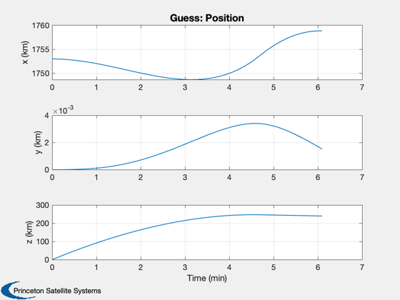 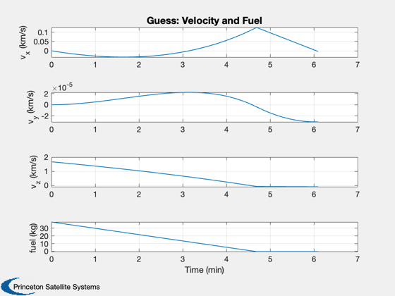 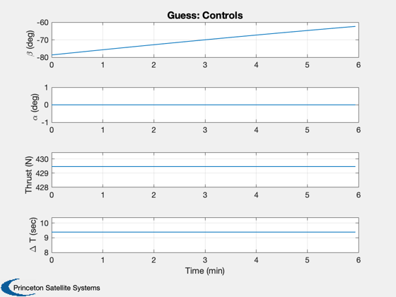 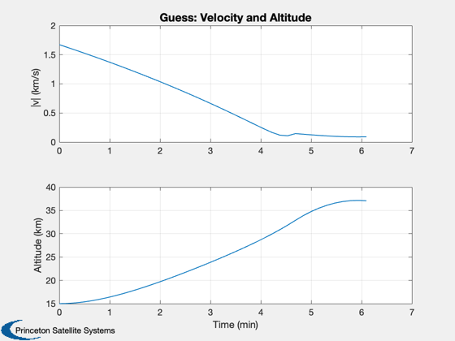 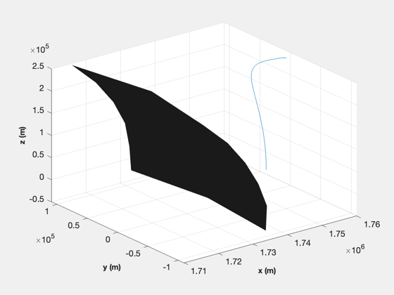
Now find the optimal angles with fmincon
Start with the angles found from BilinearTangentLaw. The constraint function simulates the trajectory with RHSPlanet3D.
beta Thrust angle in rv plane alpha Thrust angle out of plane
d.timeOpt = 1; % Flag, variable timestep d.fuelW = 0; % Weight on fuel d.timeW = 1; % weight on time % fmincon options if( verLessThan('matlab', 'R2014b') ) opts = optimset( 'Display','iter-detailed',... 'TolFun',0.6,... 'TolCon',1e-5,... 'MaxFunEvals',100000); else opts = optimset( 'Display','iter-detailed',... 'TolFun',0.6,... 'algorithm',algorithm,... 'TolCon',1e-5,... 'MaxFunEvals',100000); end costFun = @(x) LandingCost3D(x,d); % cost - sum of total time and fuel mass constFun = @(x) LandingConst3D(x,d); % constraints alpha = zeros(d.n,1); thrust = thrustMax*ones(d.n,1); x0 = [d.beta';alpha;thrust;dT']; cost0 = LandingCost3D( x0, d ); lB = [-(pi/2)*ones(d.n,1);-0.001*ones(d.n,1);zeros(2*d.n,1)]; uB = [ (pi/2)*ones(d.n,1); 0.001*ones(d.n,1);ceil(thrust);10*ones(length(dT),1)]; [x,cost] = fmincon(costFun,x0,[],[],[],[],lB,uB,constFun,opts);
First-order Norm of
Iter F-count f(x) Feasibility optimality step
0 157 3.657635e+02 4.761e+01 1.133e-01
1 314 2.832440e+02 1.813e+01 4.871e+00 1.328e+01
2 471 2.732671e+02 2.806e+00 6.459e+00 1.808e+00
3 628 2.736891e+02 5.733e-02 5.985e+00 1.141e+00
4 785 2.727743e+02 5.043e-02 6.357e+00 8.696e-01
5 943 2.732662e+02 3.493e-02 6.264e+00 5.587e-01
6 1100 2.744763e+02 1.914e-02 6.169e+00 2.698e+00
7 1257 2.753971e+02 2.531e-02 6.050e+00 6.015e+00
8 1415 2.761194e+02 3.521e-03 6.094e+00 6.269e+00
9 1573 2.765031e+02 1.618e-03 6.198e+00 7.246e+00
10 1731 2.768875e+02 2.509e-03 6.131e+00 4.967e+00
11 1888 2.768227e+02 5.213e-03 6.133e+00 6.983e-01
12 2047 2.769269e+02 7.365e-03 6.129e+00 1.003e+00
13 2204 2.771786e+02 2.687e-03 6.134e+00 1.472e+00
14 2361 2.772818e+02 1.147e-03 6.129e+00 9.722e-01
15 2518 2.773014e+02 3.848e-04 6.132e+00 1.859e-01
16 2675 2.773112e+02 5.678e-06 6.136e+00 1.420e-01
17 2833 2.773404e+02 1.306e-06 6.143e+00 3.440e-01
18 2991 2.773714e+02 2.871e-06 6.142e+00 4.289e-01
19 3149 2.773782e+02 5.106e-06 6.136e+00 5.413e-01
20 3307 2.773628e+02 1.360e-05 6.136e+00 8.925e-01
21 3465 2.773546e+02 2.057e-05 6.132e+00 4.649e-01
22 3622 2.773533e+02 2.192e-04 6.139e+00 1.062e-01
23 3779 2.773553e+02 1.438e-04 6.143e+00 1.264e-01
24 3936 2.773585e+02 1.545e-05 6.146e+00 1.510e-01
25 4094 2.773577e+02 4.387e-07 4.692e+00 1.230e-01
26 4252 2.773278e+02 3.375e-06 9.947e+00 3.996e-01
27 4410 2.773108e+02 3.118e-06 1.321e+01 4.980e-01
28 4567 2.772920e+02 1.567e-05 1.981e+01 6.723e-01
29 4725 2.772445e+02 1.851e-05 2.491e+01 9.711e-01
30 4883 2.772340e+02 5.619e-07 1.777e+01 3.648e-01
First-order Norm of
Iter F-count f(x) Feasibility optimality step
31 5041 2.772331e+02 1.455e-06 1.459e+01 2.839e-01
32 5199 2.772266e+02 2.284e-08 8.656e+00 1.176e-01
33 5357 2.772223e+02 5.914e-07 8.265e+00 2.422e-01
34 5515 2.772245e+02 2.825e-07 6.535e+00 1.770e-01
35 5673 2.772272e+02 2.966e-07 1.008e+01 2.497e-01
36 5831 2.772317e+02 8.485e-07 1.156e+01 3.958e-01
37 5989 2.772281e+02 1.189e-08 9.517e+00 1.983e-01
38 6147 2.772242e+02 1.877e-07 1.368e+01 5.833e-01
39 6305 2.772189e+02 3.543e-06 3.471e+01 9.399e-01
40 6463 2.772146e+02 5.868e-07 1.797e+01 4.047e-01
41 6621 2.772139e+02 9.484e-07 1.161e+01 4.453e-01
42 6779 2.772137e+02 1.775e-06 1.446e+01 5.754e-01
43 6937 2.772114e+02 1.158e-07 8.098e+00 1.852e-01
44 7095 2.772119e+02 2.810e-09 3.941e+00 6.868e-02
45 7253 2.772125e+02 1.140e-07 1.083e+01 3.027e-01
46 7411 2.772176e+02 1.791e-07 1.838e+01 4.175e-01
47 7569 2.772268e+02 4.834e-08 1.305e+01 2.448e-01
48 7727 2.772508e+02 7.479e-07 8.712e+00 8.861e-01
49 7885 2.772780e+02 1.332e-06 1.584e+01 9.124e-01
50 8043 2.772774e+02 1.995e-08 4.391e+00 6.991e-02
51 8201 2.772772e+02 9.627e-10 4.278e+00 9.549e-02
52 8359 2.772804e+02 4.958e-09 9.036e+00 1.770e-01
53 8516 2.772802e+02 4.050e-06 6.785e+00 9.765e-02
54 8674 2.772816e+02 2.713e-08 1.157e+01 2.228e-01
55 8832 2.772878e+02 8.008e-08 1.734e+01 4.671e-01
56 8990 2.772883e+02 1.603e-07 1.211e+01 3.550e-01
57 9148 2.772898e+02 4.732e-09 7.156e+00 8.572e-02
58 9306 2.772863e+02 3.674e-09 3.702e+00 1.371e-01
59 9464 2.772857e+02 8.937e-09 2.885e+00 1.466e-01
60 9622 2.772845e+02 8.143e-09 4.703e+00 1.190e-01
First-order Norm of
Iter F-count f(x) Feasibility optimality step
61 9779 2.772826e+02 7.818e-06 8.468e+00 1.385e-01
62 9937 2.772824e+02 1.492e-08 6.144e+00 2.489e-01
63 10095 2.772773e+02 2.451e-08 5.814e+00 5.335e-01
64 10253 2.772710e+02 2.580e-08 7.164e+00 5.459e-01
65 10411 2.772681e+02 1.472e-08 5.287e+00 2.389e-01
66 10569 2.772688e+02 4.589e-09 3.743e+00 8.871e-02
67 10727 2.772673e+02 7.040e-09 4.074e+00 2.775e-01
68 10884 2.772660e+02 2.003e-06 3.359e+00 2.248e-01
69 11042 2.772643e+02 1.533e-08 3.592e+00 6.967e-02
70 11199 2.772622e+02 5.396e-06 4.913e+00 1.245e-01
71 11357 2.772600e+02 1.778e-07 5.742e+00 3.087e-01
72 11515 2.772600e+02 9.166e-08 5.184e+00 2.487e-01
73 11673 2.772609e+02 6.558e-09 7.981e+00 1.274e-01
74 11830 2.772598e+02 4.517e-06 2.788e+00 3.992e-02
75 11987 2.772590e+02 1.529e-06 3.564e+00 1.491e-01
76 12144 2.772590e+02 4.502e-07 1.953e+00 1.980e-01
77 12301 2.772594e+02 2.362e-07 2.473e+00 6.369e-02
78 12458 2.772603e+02 7.339e-07 3.989e+00 7.188e-02
79 12616 2.772592e+02 1.897e-09 3.131e+00 8.550e-02
80 12774 2.772559e+02 3.745e-08 2.343e+00 2.451e-01
81 12932 2.772543e+02 2.827e-08 2.228e+00 2.080e-01
82 13090 2.772549e+02 9.221e-09 2.897e+00 1.050e-01
83 13247 2.772546e+02 8.400e-07 1.199e+00 2.048e-02
84 13405 2.772541e+02 2.331e-09 2.202e+00 6.098e-02
85 13562 2.772542e+02 6.832e-07 2.319e+00 5.206e-02
86 13719 2.772544e+02 9.752e-07 2.237e+00 6.906e-02
87 13877 2.772540e+02 1.389e-10 2.041e+00 6.364e-02
88 14035 2.772528e+02 1.665e-09 2.107e+00 1.735e-01
89 14193 2.772516e+02 6.473e-10 2.248e+00 1.177e-01
90 14351 2.772502e+02 2.036e-09 3.198e+00 1.053e-01
First-order Norm of
Iter F-count f(x) Feasibility optimality step
91 14508 2.772496e+02 2.437e-06 2.455e+00 6.098e-02
92 14666 2.772485e+02 5.847e-09 1.563e+00 9.848e-02
93 14824 2.772462e+02 2.316e-09 6.692e-01 1.565e-01
94 14982 2.772452e+02 9.657e-10 6.501e-01 9.221e-02
95 15140 2.772445e+02 1.251e-09 1.078e+00 8.572e-02
96 15298 2.772442e+02 9.754e-11 7.398e-01 7.865e-02
97 15456 2.772450e+02 2.926e-09 1.146e+00 1.014e-01
98 15614 2.772461e+02 9.212e-09 2.500e+00 1.617e-01
99 15771 2.772466e+02 7.898e-07 2.445e+00 1.252e-01
100 15929 2.772473e+02 9.882e-10 2.471e+00 2.051e-01
101 16087 2.772480e+02 2.819e-09 1.789e+00 1.644e-01
102 16245 2.772487e+02 1.846e-10 1.663e+00 3.457e-02
103 16402 2.772492e+02 2.652e-07 1.195e+00 3.932e-02
104 16559 2.772496e+02 6.041e-08 1.143e+00 3.925e-02
105 16717 2.772499e+02 3.746e-09 1.180e+00 7.072e-02
106 16875 2.772502e+02 2.846e-09 1.142e+00 9.960e-02
107 17033 2.772518e+02 4.250e-09 1.831e+00 9.321e-02
108 17190 2.772515e+02 8.423e-07 9.105e-01 1.426e-02
109 17347 2.772519e+02 7.367e-08 9.355e-01 2.871e-02
110 17504 2.772530e+02 6.079e-07 8.817e-01 8.064e-02
111 17662 2.772535e+02 1.592e-09 8.850e-01 5.600e-02
112 17820 2.772539e+02 6.717e-10 1.249e+00 2.972e-02
113 17978 2.772540e+02 2.731e-10 1.191e+00 2.582e-02
114 18136 2.772542e+02 3.213e-10 1.036e+00 3.100e-02
115 18294 2.772545e+02 1.110e-09 8.246e-01 4.903e-02
116 18452 2.772547e+02 1.705e-09 9.945e-01 7.240e-02
117 18609 2.772547e+02 5.005e-07 1.060e+00 5.613e-02
118 18767 2.772546e+02 3.365e-11 1.193e+00 7.765e-02
119 18925 2.772544e+02 1.753e-10 1.226e+00 7.308e-02
120 19083 2.772536e+02 2.392e-10 1.488e+00 3.174e-02
First-order Norm of
Iter F-count f(x) Feasibility optimality step
121 19241 2.772533e+02 1.569e-13 6.474e-01 3.424e-02
122 19399 2.772525e+02 2.208e-10 6.607e-01 8.021e-02
123 19557 2.772524e+02 2.660e-11 5.857e-01 5.471e-02
Optimization completed: The relative first-order optimality measure, 5.856687e-01,
is less than options.OptimalityTolerance = 6.000000e-01, and the relative maximum constraint
violation, 5.587197e-13, is less than options.ConstraintTolerance = 1.000000e-05.
Simulate the landing with optimal angles
d.beta = x(1: d.n)'; d.alpha = x(d.n+1: 2*d.n)'; d.thrust = x(2*d.n+1:3*d.n)'; dT = x(3*d.n+1:4*d.n)'; fprintf(1,'Optimal time %g sec\n',sum(dT)); Plot2D() [cIn, cEq, s] = LandingConst3D( x, d ); DispWithTitle(cEq,'Final equality constraints, [altitude;y;x velocity;y velocity;z velocity]'); Simulate3DLanding( dT, d, 'FMinCon3D' ); if( printFigures ) for k = 1:10 PrintFig(0,2,k,sprintf('fmincon3D_%d',k)); end end Figui %-------------------------------------- % $Id: 0a573b49691b9168dc3193e1f671bc25f6675b73 $
Optimal time 277.252 sec Final equality constraints, [altitude;y;x velocity;y velocity;z velocity] 2.6603e-11 -6.2839e-14 -4.2023e-13 3.5147e-16 7.6135e-13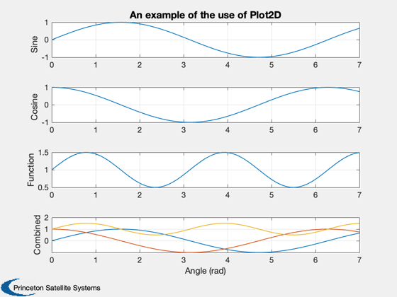
 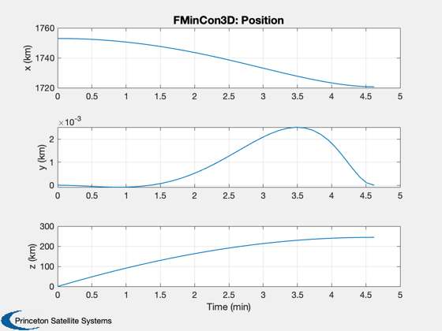 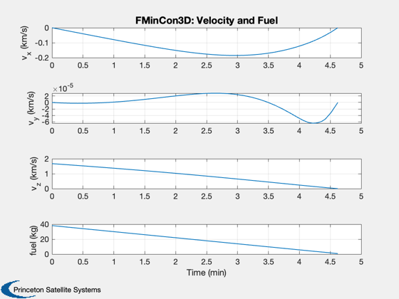 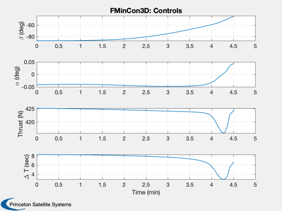 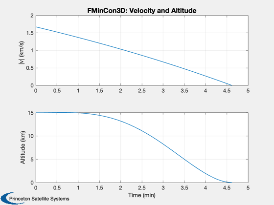 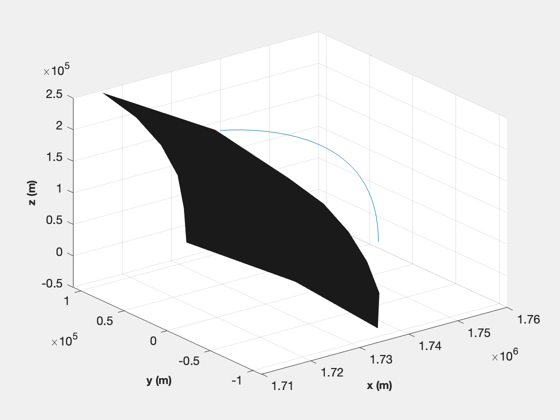 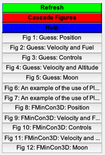
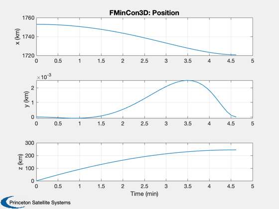 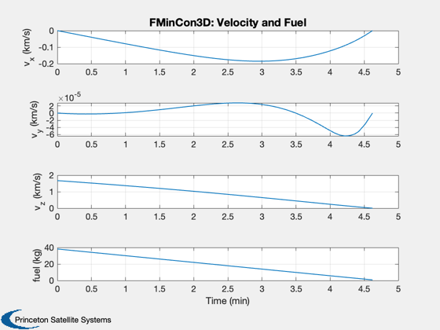 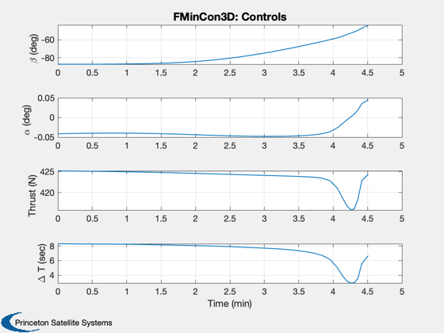 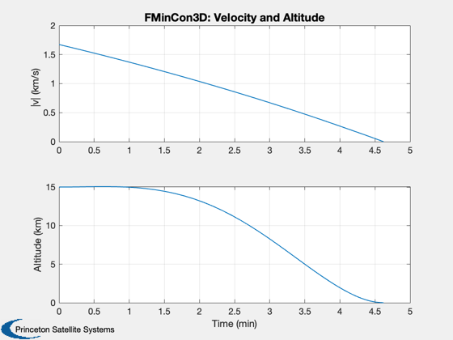 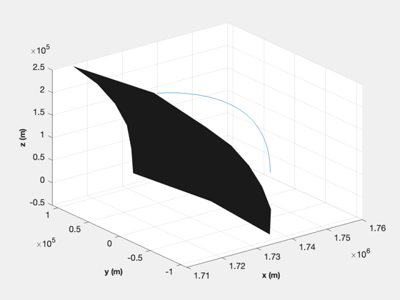 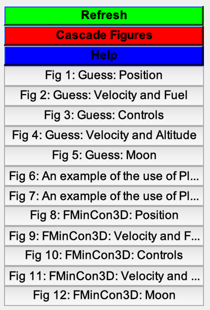